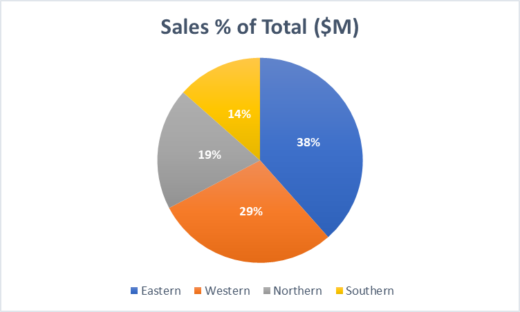
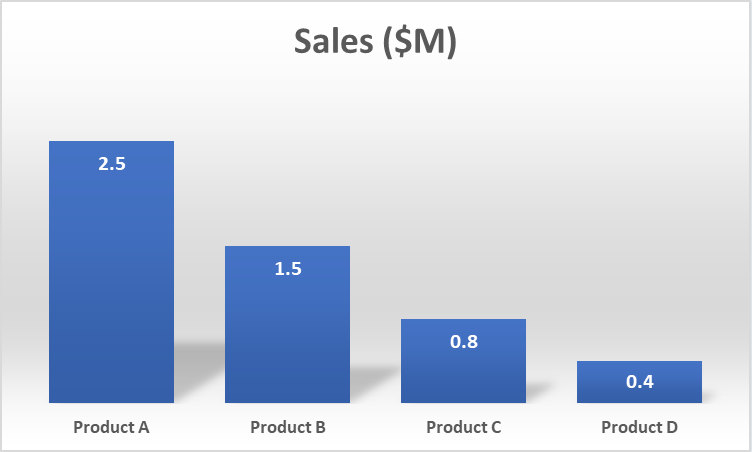

FROM RAW DATA TO ACTIONABLE INSIGHTS:
THE POWER OF STRUCTURED DATA ANALYTICS FRAMEWORKS
Define the Purpose and Scope of the Report
The first step in generating any data report is to clearly define its purpose and scope. This step is essential because it dictates the direction the report will take. The purpose of the report should outline the primary goal, whether it’s to summarize data, provide a detailed analysis, make predictions, or offer actionable recommendations. For instance, if the report is meant to assess sales performance, the purpose will be focused on analyzing revenue, growth trends, and the factors influencing sales over a certain period. The scope of the report will identify the key metrics and data sources that need to be considered.
It will also define the timeframes covered, whether it's a weekly, monthly, quarterly, or annual report. The scope helps in setting boundaries for the analysis, ensuring that the data collected is relevant and does not stray from the report’s intended purpose. Without a clear purpose and scope, the report can easily become disorganized and fail to convey the intended insights. Additionally, the scope should address who the target audience is. Different stakeholders, such as executives, managers, or external clients, might require different levels of detail, so understanding this helps tailor the content and complexity of the report.
Select the Type of Report
Once the purpose and scope of the report are defined, the next step is to determine the type of report that will best suit the situation. Data reports can take various forms, each designed for a specific purpose. Descriptive reports are used to summarize historical data and trends, providing a snapshot of what has happened in the past. For example, a monthly sales report would typically present data on total sales, broken down by region, product, or time period. Diagnostic reports, on the other hand, go a step further by identifying the reasons behind particular outcomes. A diagnostic report could explore why sales dropped in a specific quarter, considering factors like market conditions, pricing strategies, or operational inefficiencies.
Predictive reports are forward-looking and focus on forecasting future trends based on historical data. These reports are valuable for making strategic decisions, such as predicting future sales volumes or customer behavior. Prescriptive reports take things a step further by not only predicting future trends but also offering actionable recommendations for improving performance. A prescriptive report might suggest changes to marketing strategies based on predictive analytics. Finally, custom reports are tailored to meet the needs of specific stakeholders or address unique business challenges. These reports can combine elements of descriptive, diagnostic, and predictive analysis, providing a comprehensive overview that meets specific business objectives.
Data Collection
The data collection phase is critical to ensuring that the report is based on accurate, reliable, and relevant information. Depending on the type of report, the data collection process can vary widely. Typically, data can be sourced from internal systems, such as databases containing historical sales records, customer information, or inventory data. External data sources are also valuable, particularly when conducting market research or benchmarking against competitors. For example, data on industry trends or competitor performance might be needed to contextualize an analysis of a company’s performance. In some cases, primary data collection may be necessary, such as surveys, questionnaires, or interviews. This approach allows for gathering firsthand insights from customers, employees, or other stakeholders, providing a more personalized and accurate representation of the situation at hand.
Moreover, when working with large datasets, automated data collection methods such as APIs can be highly efficient. For instance, integration with external platforms like Google Analytics can provide real-time website data, or social media platforms can provide insights into customer sentiment and engagement. Regardless of the source, it is crucial to ensure that the data collected is of high quality. This includes verifying the credibility of external sources, ensuring completeness, and ensuring that data is collected consistently across different time periods or market segments.
Data Cleaning and Preprocessing
Once the data has been collected, the next crucial step is cleaning and preprocessing it for analysis. Raw data often contains inconsistencies, errors, and outliers that can skew the results if left unchecked. Data cleaning involves identifying and addressing issues like missing values, duplicates, and inaccuracies. One of the first tasks in this phase is to remove duplicate records, which can occur when data is merged from different sources or entered multiple times. Missing data is another common issue and can be handled in several ways, such as imputing missing values using statistical methods or excluding records with too many missing values. Data preprocessing also includes ensuring that the data is in a consistent format.
For instance, dates and times should be standardized, numerical values should be in the same units (e.g., currency or percentage), and categorical variables should be labeled consistently. Additionally, outliers—values that fall far outside the expected range—should be identified and assessed for their validity. Depending on the context, outliers might be corrected, removed, or flagged for further investigation. A critical aspect of data cleaning is ensuring that all variables and data types are correctly categorized to facilitate effective analysis. If a report involves advanced data modeling, data normalization or transformation might be necessary to ensure that variables are comparable and suitable for analysis.
Data Analysis
Data analysis is the heart of any report, as it turns raw data into meaningful insights. Depending on the complexity and goals of the report, various methods of analysis can be used. For simple reports, basic techniques like aggregation and summarization may be sufficient. For example, calculating the total sales for a given period or determining the average customer satisfaction score. More advanced reports may involve statistical analysis, such as regression analysis to identify relationships between variables, or hypothesis testing to confirm or refute assumptions about the data. Predictive analysis, often done using machine learning algorithms, helps in forecasting future trends based on historical patterns. In this case, data analysis would not only summarize what has happened but also estimate what is likely to happen in the future.
Data analysis also often involves segmentation, where the data is broken down into smaller groups based on certain characteristics, such as customer demographics, product categories, or geographic regions. This allows for a more nuanced analysis that can uncover trends or patterns that may not be visible in the aggregate data. The choice of analysis methods depends on the report's objectives and the type of data being examined. Regardless of the method, the goal is always to derive insights that can drive business decisions and actions. For more complex analyses, software tools like Excel, Python, or R might be used to conduct deeper statistical tests, predictive modeling, or data visualization.
Data Visualization
Data visualization plays a key role in helping the audience understand and interpret the results of the analysis. Visual representations such as graphs, charts, and dashboards make complex data more digestible, allowing stakeholders to quickly grasp key insights. The type of visualizations used will depend on the data being presented and the audience’s needs. For example, a time series plot might be used to show trends over time, such as sales growth or website traffic. Bar charts and histograms are often employed to compare quantities across different categories, while pie charts are effective for showing proportions of a whole. In more complex reports, dashboards provide an interactive way to explore data, allowing users to drill down into specific metrics or time periods.
Tools like Power BI, Tableau, or Google Data Studio are popular for creating real-time dashboards that update automatically as new data is added. Data visualizations not only help communicate findings clearly but also highlight key patterns, trends, and outliers that may otherwise be overlooked in a raw data table. Good visualizations should be simple, easy to understand, and aligned with the overall message of the report. They should also be tailored to the audience, ensuring that the level of detail is appropriate for the stakeholders involved. Effective visualization helps ensure that the report is both engaging and actionable, providing clear insights that can drive business decisions.
 
Report Writing and Structuring
After the data analysis and visualization stages, the next step is to structure and write the report. A well-organized report is essential for communicating the findings clearly and ensuring that the report fulfills its purpose. The structure typically includes an executive summary, an introduction, a methodology section, the main analysis, and a conclusion or recommendations. The executive summary is a concise overview of the entire report, highlighting the key findings, recommendations, and insights. This section is especially important for high-level stakeholders who may not have the time to read the entire report. The introduction sets the stage by outlining the purpose, scope, and methodology used in the report.
The methodology section explains how the data was collected, cleaned, and analyzed, providing transparency for readers and enabling them to understand how the results were derived. The main body of the report presents the analysis in detail, often using tables, graphs, and charts to support the findings. It is important to explain the insights in simple terms, especially when presenting complex analyses. Finally, the conclusion summarizes the key takeaways and offers any recommendations for action. If necessary, an appendix can be included at the end of the report to provide additional details, such as raw data, calculations, or technical explanations. The language used in the report should be clear, concise, and tailored to the audience’s level of expertise, ensuring that the report is both accessible and informative.
Review and Validate the Report
Before finalizing the report, it is crucial to review and validate the findings. This step ensures that the report is accurate, complete, and free of errors. Review the analysis to verify that the calculations are correct and that the visualizations properly represent the data. This step may involve cross-checking the results with the original data sources or comparing the findings with previous reports to ensure consistency. It is also essential to validate the assumptions made during the analysis. For example, if predictive models were used, they should be tested for accuracy and adjusted if necessary.
Additionally, all data sources should be properly cited, and the methodology should be transparent to ensure that the report’s conclusions are credible. Peer reviews can be helpful at this stage, as fresh eyes may spot mistakes or inconsistencies that were previously overlooked. Validation also involves ensuring that the report aligns with its original purpose and scope, and that it provides actionable insights for decision-makers. If any discrepancies or gaps in the analysis are found, they should be addressed before finalizing the report. A thorough review process helps prevent errors and ensures that the report is both accurate and effective in conveying its message.
Distribution and Presentation
The final step is to distribute and present the report to the intended audience. Depending on the report’s format and the preferences of the stakeholders, it can be shared in various ways. For static reports, PDF or Word documents are commonly used, as they preserve formatting and can be easily shared via email or printed for meetings. For more interactive reports, dashboards or online reports can be shared using platforms like Google Data Studio, Power BI, or Tableau, allowing stakeholders to access real-time data and explore the findings in greater detail. In some cases, reports may need to be presented in person or during meetings. In such cases, key findings can be summarized in a PowerPoint presentation, with visualizations and bullet points highlighting the most important insights.
Presentations should be concise and focused, providing a clear narrative of the data story. It is also essential to tailor the presentation to the audience, ensuring that the level of detail is appropriate and that any technical terms are explained clearly. Feedback from stakeholders can help refine future reports, ensuring they are even more effective in meeting their needs. Regardless of the delivery method, the goal is to ensure that the report is accessible and understandable, enabling decision-makers to use the insights to take appropriate action.
Tools You Can Use
Various tools are available for different aspects of data reporting, and choosing the right ones depends on the complexity of the report and the preferences of the team or stakeholders. For basic data analysis and visualization, Excel and Google Sheets are widely used due to their accessibility and ease of use. These tools allow users to create simple reports, perform calculations, and generate charts or graphs with minimal effort. For more advanced reports, Power BI and Tableau offer powerful visualization capabilities, allowing users to create interactive dashboards and perform real-time data analysis. These tools are particularly useful when working with large datasets or when stakeholders need to explore the data themselves.
For data analysis and predictive modeling, Python and R provide more flexibility and advanced capabilities, enabling users to conduct statistical tests, build machine learning models, and automate parts of the reporting process. In addition, Google Data Studio offers an excellent free alternative for creating dynamic, shareable reports. If your report requires the integration of external data sources or the automation of data collection, APIs and integration tools like Zapier can help streamline the process. The choice of tools will ultimately depend on the specific requirements of the report and the tools the team is most comfortable using. Regardless of the tool chosen, it’s important to ensure that it supports the objectives of the report, whether that’s providing a high-level summary or delivering in-depth analysis and recommendations.
IN CONCLUSION
In conclusion, creating effective data reports involves a structured approach from data collection to visualization. By defining clear objectives, using the right tools, and presenting insights clearly, you can ensure that your reports drive informed decision-making and add value to any business or project.
RELEVANT QUOTE
"Data is the new oil, but like oil, it must be refined to be valuable."
– Clive Humby